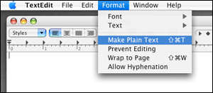
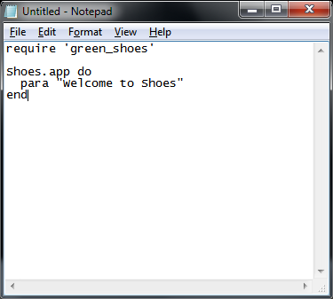

The Green Shoes Manual 1.0.322
Installing Green Shoes
はい、ではGreen Shoesのインストールを行います。あなたは次のような疑問を持っているでしょう: Rubyのインストールは必要ですか？なにも解凍しなくてもいいですか？どんなコマンドをタイプする必要がありますか？
はい。RubyやGemをインストールする必要はあります。でも心配しないで下さい。 以下に必要なステップを全て示しますから。
Step 1: Green Shoesのインストール
まず最初にRubyをインストールします。 Windowsの場合はこのサイトRubyInstaller for Windows にアクセスして、最新のRubyInstaller 1.9.2をインストールして下さい。
そして、以下のコマンドを実行してください。
- gem install green_shoes
これだけです。簡単でしょう?
注意: green_shoes gemはこのサイトRubyGems.org にあります。
もしriやrdocの作成でエラーが発生したら、次のオプション--no-ri --no-rdocを試してみて下さい。
Step 2: 新しいテキストファイルの作成
Shoesプログラムは.rbの拡張子で終わる、ただの単純なテキストファイルです。
空のテキストファイルを作成するいくつかの方法は:
- Mac OS XではApplicationsフォルダに移動してTextEditアプリケーションをダブルクリックします。空のエディタウィンドウが表示されます。そしてFormatメニューからMake Plain Textオプションを選択します。はい、準備ができました。
- Windowsでは、スタートメニューへ行きます。All Programs、AccessoriesそしてNotepadを選択します。. 
- Linuxでは、多くのディストリビューションがgeditを備えています。それを実行してください。または、もしあなたのディストリビューションがKDEを基にしているのであればkateを実行してください。
そして、空のウィンドウに次のようにタイプしてください:
require 'green_shoes'
Shoes.app do
para "Welcome to Shoes"
end
welcome.rbとしてデスクトップに保存してください。
Step 3: それを実行してください！Shoesへ行こう！
プログラムを実行するためには、コンソールウィンドウを開いて、以下のコマンドを実行します。
- ruby welcome.rb
まだ大したものではないですが、確かにそれはプログラムです！少なくとも、そのコツが分かったでしょう！
Shoesで何を作りますか？
さて、ウィンドウアプリケーションを作成することができます。 しかし、Shoesはウェブから影響を受けているので、アプリケーションは多くのウィジェットよりも、 画像を使ったりテキストを配置する傾向があります。例えば、Shoesはタブコントロールやツールバーを備えていません。 Shoesは軽量なツールキットだと言うことを覚えていますか？
それでもShoesはボタンやエディットボックスのようなウィジェットを少しだけ持っています。 そして、多くの（タブコントロールまたはツールバーのような）不足している要素は、画像でシミュレーションすることが できます。
ShoesはCairoと呼ばれるとてもよくできた描画エンジンによって一部書かれており、 それは形状や色彩を描くのに利用されています。このように、Shoesは、生き生きとしたグラフィックを描画するために とてもいい言語である、NodeBoxとProcessingから影響を受けています。
Next: The Rules of Green Shoes